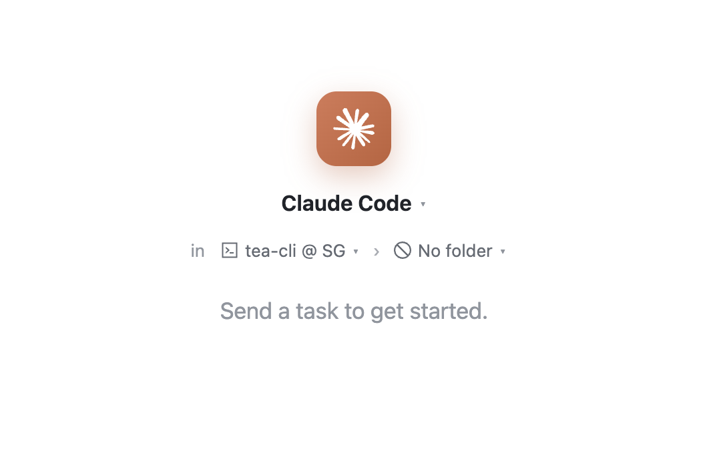

in [workspace ▾] › [folder ▾] in NewSessionProviderHero.tsx. Engine card, empty copy and composer stay as they are.
A workspace is where the session runs. A folder is only a sidebar group for sessions, so it is optional and is not a directory. Panels are drawn at 1:1 around the hero.
| A · one pill | B · two fields | C · in composer | |
|---|---|---|---|
| Looks clickable | Yes | Yes | Yes |
| "No folder" state | Not shown | "+ Add to a folder" | Not shown |
| Menus to change both | 1 | 2 | 1 |
| Visual weight | Light | Heavy | Lightest in the middle; crowds the composer |
| Fixes ①②③ | ①②③ | ①② (③ only partly) | ①②③ |
+ Folder after the workspace name.